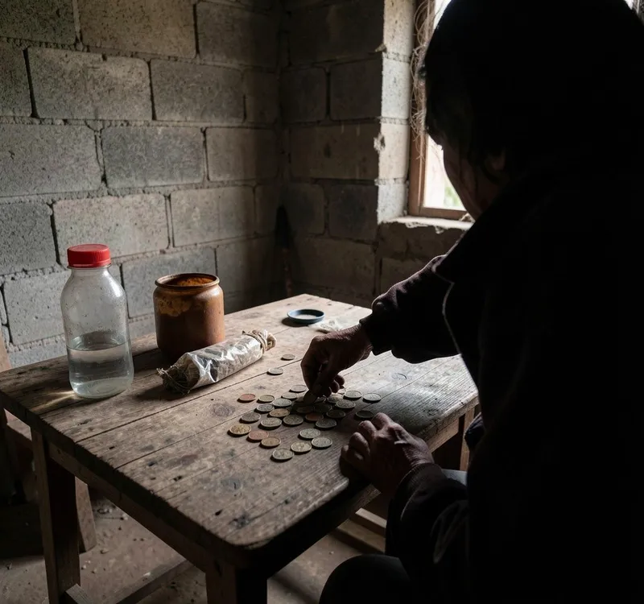

OKpolítico
OKpolíticoNoticias actuales
Esta sección está disponible para tu marca →INE asciende a funcionaria investigada por contrato de 22 mdp sin licitación
El INE designó a Karla Sofía Sandoval Domínguez al frente del Servicio Profesional Electoral Nacional el 16 de noviembre de 2026, tres días después de que el Órgano Interno de Cont
21 de noviembre de 2026Marina de Tavira: trayectoria, cine y su historia familiar
Perfil biográfico y trayectoria de la actriz Marina de Tavira, nominada al premio Óscar por Roma y cofundadora de Incidente Teatro. Datos verificados a través de registros biográfi
21 de noviembre de 2026Inés Gómez Mont recibió 178 millones de pesos de empresas simuladoras
La FGR investiga a Inés Gómez Mont por recibir más de 178 millones de pesos de empresas simuladoras. Los recursos presuntamente provienen de desvíos en el sistema penitenciario fed
21 de noviembre de 2026Ciudad de México: ¿la capital más contaminada de América?
Análisis de la calidad del aire en la Ciudad de México. Contrastamos los datos de mejora en partículas reportados por Sedema y la tendencia histórica del PNUMA con el aumento de co
21 de noviembre de 2026
Peso cae a 19.11 por dólar tras recorte de Banxico y postura Fed
El peso mexicano alcanzó su nivel más bajo desde junio de 2025, cerrando en 19.11 por dólar. La caída responde a las minutas de Banxico y la postura de la Reserva Federal de EE. UU
20 de noviembre de 2026Cruz toma el INE; Monreal frena a Mier y oposición impugna
Blanca Cruz asume la presidencia provisional del INE por unanimidad tras la renuncia de Guadalupe Taddei (investigada por la ASF). Cruz defiende la colegialidad frente al modelo de
20 de noviembre de 2026Peso mexicano cae a su peor nivel desde junio de 2025
El peso mexicano alcanzó 19.11 por dólar, su peor nivel desde junio de 2025. La caída sigue al recorte de tasas de Banxico a 6.25% (voto 3-2) mientras la Fed endurece; la minuta re
20 de noviembre de 2026El narcotráfico costó 4.5 billones de pesos en 2024
Análisis del impacto económico del narcotráfico en México. Datos sobre el costo de la violencia, afectación a hogares y reducción de inversión pública municipal. Fuentes: IPM 2025,
20 de noviembre de 2026El 20 de noviembre no es día de descanso obligatorio en 2026
Aclara la diferencia entre la fecha histórica de la Revolución Mexicana y el día de descanso obligatorio según la Ley Federal del Trabajo para 2026. Fuentes: Milenio, Infobae, Deba
20 de noviembre de 2026
La pobreza en México bajó al 29.6 por ciento según el INEGI
Análisis de la reducción de la pobreza en México entre 2018 y 2024. Se contrastan los datos oficiales del INEGI y el Gobierno Federal con la metodología multidimensional del CONEVA
19 de noviembre de 2026
Auditoría de NL detecta presuntas triangulaciones por mil 793 mdp
La Auditoría Superior del Estado de Nuevo León reportó presuntas triangulaciones por mil 793.9 millones de pesos hacia un despacho vinculado a Samuel García. Los datos provienen de
19 de noviembre de 2026Morena defiende INE con 10 consejeros mientras PAN y PRI denuncian trampa
Morena defiende la operatividad del INE con 10 consejeros, mientras que el PAN y el PRI denuncian una estrategia para debilitar al órgano electoral rumbo a 2027. El País señala pre
19 de noviembre de 2026José Antonio Meade advierte presión presupuestal por programas sociales y deuda
José Antonio Meade analiza los retos fiscales de México para 2027, destacando la presión de los programas sociales y la deuda pública. Contrasta el reconocimiento al trabajo de Hac
19 de noviembre de 2026Segob identifica negocio de transporte detrás de caravanas migrantes
La Secretaría de Gobernación identificó que líderes de caravanas migrantes poseen líneas de autobuses para lucrar con el traslado. Mientras EE. UU. acusa a los cárteles de extorsio
19 de noviembre de 2026
Renuncian 30 funcionarios del INE tras acusaciones contra Guadalupe Taddei
Treinta funcionarios del INE renuncian tras acusaciones de corrupción y conflicto de interés contra la expresidenta Guadalupe Taddei. La ASF y la FGR investigan contratos irregular
18 de noviembre de 2026
Morena propone mantener a Blanca Cruz en el INE hasta 2027
Morena propone que Blanca Cruz siga al frente del INE hasta 2027 ante la falta de acuerdos en la Cámara de Diputados. PAN y PRI rechazan la medida calificándola de táctica dilatori
18 de noviembre de 2026Pemex adeuda 388 mil millones de pesos a bancos de México y Estados Unidos
Pemex mantiene una deuda de 388 mil millones de pesos con instituciones financieras. El reporte del tercer trimestre de 2026 revela vencimientos críticos para los próximos dos años
18 de noviembre de 2026Inbursa ofrece créditos de hasta 650 mil pesos a pensionados IMSS
Banco Inbursa ofrece el 'Crédito IMSS' con montos de hasta 650 mil pesos para pensionados Ley 73 y trabajadores activos. Plazos de 12 a 60 meses sin comisión por apertura
18 de noviembre de 2026Desempleo por estado: Ciudad de México 4.2%, sector informal: Oaxaca 43.2%
Mapa del empleo en México con datos del INEGI, 2.º trimestre 2026.
18 de noviembre de 2026UIF congela cuentas de exdirectivo del INE por presunta red de contratos irregulares
La UIF bloqueó las cuentas de Juan Carlos Cuervo Escalona, exdirectivo del INE, por presuntas irregularidades en contratos electorales. La ASF detectó 8,870 mdp en irregularidades
17 de noviembre de 2026Opinión | Propone Morena nuevas fiscalías ante impunidad en corrupción y huachicol
El diputado Alfonso Ramírez Cuéllar propone reformar el sistema de fiscalías anticorrupción y crear una especializada en hidrocarburos. La propuesta surge ante una impunidad del 99
17 de noviembre de 2026Suman 33 renuncias en el INE tras salida de Guadalupe Taddei
El INE registra 33 renuncias de funcionarios tras la salida de Guadalupe Taddei. Mientras la presidencia provisional justifica los cambios como una renovación administrativa, la FG
17 de noviembre de 2026